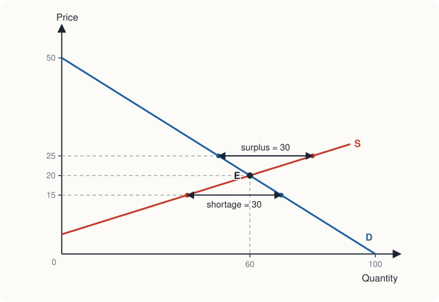
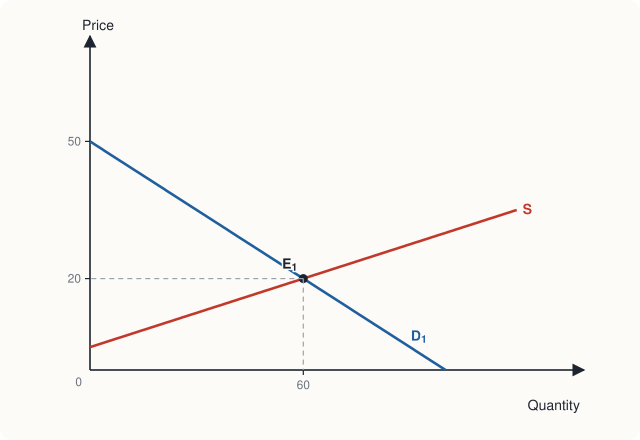
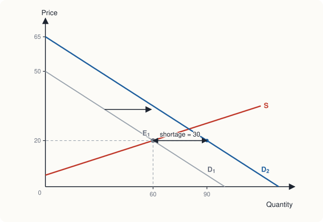
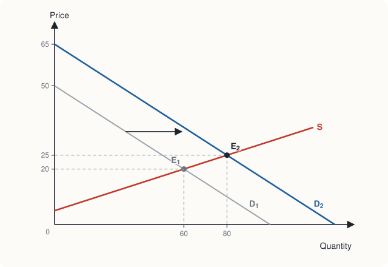
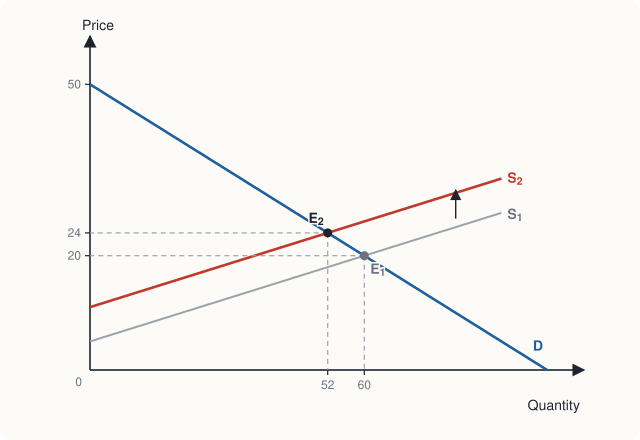

Chapter 2: Demand and Supply¶
How buyers and sellers together set prices and quantities
Learning outcomes
After studying this chapter you should be able to:
- State the law of demand and the law of supply and explain why each usually holds.
- Build a market demand or supply schedule from individual schedules.
- Distinguish a movement along a curve from a shift of the curve, and list what shifts each curve.
- Find the equilibrium price and quantity of a market from a table, a graph or a pair of equations.
- Explain how a surplus or a shortage pushes a market towards equilibrium.
- Predict the effect on price and quantity of a change in demand, in supply, or in both.
2.1 Markets and competition¶
A market is any arrangement through which buyers and sellers of a good or service come into contact and trade. Some markets have a place: a vegetable mandi, a cattle fair, a stock exchange. Many do not: the market for second-hand phones operates through shops, websites and personal contacts across a whole country. What makes it one market is that the buyers and sellers deal in the same good and are aware of one another's prices.
This chapter studies a competitive market, one with so many buyers and so many sellers, each small relative to the market, that no single one of them can influence the price. Each takes the market price as given. A wheat farmer is a good example: whether she sells ten quintals or a hundred, the price in the mandi is the same. The model of demand and supply describes how such a market works. Later chapters (8 to 10) consider markets in which a seller is large enough to set the price.
2.2 Demand¶
The quantity demanded of a good is the amount that buyers are willing and able to buy at a given price, during a given period. "Willing and able" matters: wanting a car is not demand unless you can pay for it. "During a period" matters too: a quantity demanded is a flow, so many kilograms a week or many units a year.
The law of demand¶
Other things being equal, when the price of a good rises, the quantity demanded falls; when the price falls, the quantity demanded rises. This inverse relationship is called the law of demand. It holds for almost every good, for two reasons.
- The substitution effect. When the price of tea rises, tea becomes more expensive relative to coffee, juice and other drinks, so some buyers switch to them.
- The income effect. When the price of a good rises, a buyer's income buys less than before; the buyer is in effect poorer and, for most goods, buys less.
Chapter 6 makes these two effects precise. A third, simpler reason is diminishing marginal utility (Chapter 5): each extra unit of a good gives a buyer less satisfaction than the one before, so a buyer will take more units only at a lower price.
The demand schedule and the demand curve¶
A demand schedule is a table showing the quantity demanded at each price. A demand curve is the same information drawn as a graph, with price on the vertical axis and quantity on the horizontal axis. Because of the law of demand, the curve slopes downwards.
From individual to market demand¶
The market demand is the total quantity that all buyers together demand at each price. To find it, add the quantities demanded by every buyer at each price. On a graph, this means adding the individual curves horizontally.
Example 2.1 Adding individual demands
A small market for mangoes has two buyers, Anil and Bela. Their weekly demand schedules are below. Find the market demand.
| Price (₹ per kg) | Anil (kg) | Bela (kg) | Market (kg) |
|---|---|---|---|
| 60 | 1 | 2 | 3 |
| 50 | 2 | 3 | 5 |
| 40 | 3 | 5 | 8 |
| 30 | 4 | 7 | 11 |
| 20 | 5 | 9 | 14 |
Solution. At each price, add the two quantities across the row: at ₹40, \(3 + 5 = 8\) kg. The market demand schedule is the last column. Like the individual schedules, it shows larger quantities at lower prices.
A demand curve as an equation¶
For calculation, a demand curve is often written as an equation. Throughout this chapter we use the market demand
where \(P\) is the price in rupees and \(Q_d\) the quantity in units per week. Each ₹1 rise in price reduces the quantity demanded by 2 units. At \(P = 0\), buyers would take 100 units; at \(P = 50\) they would take none. Solved for \(P\), the same curve is \(P = 50 - \tfrac{1}{2}Q\), which is the form we draw.
2.3 What shifts demand¶
The demand curve shows how quantity demanded depends on the price when everything else is held constant. When one of those other things changes, the whole curve shifts. The main ones are these.
- Income. For a normal good, a rise in income increases demand: the curve shifts to the right. Most goods are normal: clothes, restaurant meals, air travel. For an inferior good, a rise in income reduces demand, because buyers switch to something they prefer. Coarse grains, the cheapest cuts of cloth, or long-distance travel by the slowest train may be inferior goods for many households: as incomes rise, people buy less of them.
- Prices of related goods. Two goods are substitutes if a rise in the price of one increases the demand for the other: tea and coffee, buses and the metro, two brands of soap. They are complements if a rise in the price of one reduces the demand for the other, because they are used together: cars and petrol, printers and ink cartridges, phones and mobile data.
- Tastes and preferences. A health campaign that shows the benefits of millets increases the demand for millets; a fashion moving away from a style reduces the demand for it.
- Expectations. If buyers expect the price of a good to rise next month, they buy more now; if they expect their incomes to rise, they may spend more today.
- The number and kind of buyers. A growing population, or more tourists in a town, increases the market demand for many goods. A change in the age structure changes the demand for schools, medicines and housing.
Movement along the curve versus shift of the curve¶
This distinction is the most important piece of vocabulary in the chapter.
- A change in the price of the good itself causes a movement along the demand curve. Economists call this a change in the quantity demanded.
- A change in anything else that affects buyers causes a shift of the demand curve. Economists call this a change in demand.
Common mistake
"The price of petrol rose, so the demand for petrol fell" is wrong in economics vocabulary. A rise in the price of petrol reduces the quantity demanded of petrol: a movement up along the same curve. The demand for petrol (the whole curve) has not changed. But a rise in the price of petrol does reduce the demand for cars, a complement, shifting that curve to the left.
| Change | Effect on the demand curve for good X |
|---|---|
| Price of X rises | Movement up along the curve (quantity demanded falls) |
| Income rises, X is normal | Shift to the right |
| Income rises, X is inferior | Shift to the left |
| Price of a substitute rises | Shift to the right |
| Price of a complement rises | Shift to the left |
| Buyers expect X to become dearer | Shift to the right (now) |
| More buyers enter the market | Shift to the right |
Table 2.1. What moves along and what shifts the demand curve.
2.4 Supply¶
The quantity supplied is the amount of a good that sellers are willing and able to sell at a given price during a given period.
The law of supply¶
Other things being equal, when the price of a good rises, the quantity supplied rises. The supply curve slopes upwards. The reasons are:
- a higher price makes producing the good more profitable, so existing producers expand output and new producers may start;
- producing more usually raises the cost of each extra unit (the marginal cost), because producers must pay overtime, use less suitable land or run machines harder. A producer will offer more only if the price covers this higher marginal cost. Chapter 8 shows that, in a competitive market, the supply curve is the marginal cost curve.
Market supply¶
As with demand, the market supply at each price is the sum of the quantities that all sellers offer at that price: the individual supply curves are added horizontally. In this chapter we use the market supply
At prices of ₹5 or less, nothing is supplied: the price does not cover the cost of even the cheapest unit. Above ₹5, each ₹1 rise in price brings 4 more units.
2.5 What shifts supply¶
The supply curve is drawn for given conditions of production. When these change, the curve shifts.
- Prices of inputs. A rise in wages, in the price of raw materials or in the price of fuel raises the cost of producing each unit, so sellers offer less at each price: the supply curve shifts to the left (upwards). A fall in input prices shifts it to the right.
- Technology. An improvement in technology, such as a better seed, a faster machine or a more efficient process, lowers costs and shifts supply to the right.
- Prices of other goods the producer could make. A farmer who can grow wheat or mustard will grow less wheat if the price of mustard rises. Wheat and mustard are substitutes in production. Some goods are joint products: a rise in the price of mutton increases the supply of wool and leather.
- Expectations. If sellers expect a higher price later, they may hold back supply now.
- The number of sellers. More firms entering a market shift market supply to the right.
- Natural and other conditions. For agricultural goods, the weather matters a great deal: a good monsoon shifts the supply of many crops to the right; a drought, floods or a pest attack shift it to the left.
- Taxes and subsidies. A tax per unit on sellers raises their cost of supplying each unit and shifts supply to the left; a subsidy shifts it to the right. Chapter 4 studies both.
Again: a change in the price of the good itself causes a movement along the supply curve (a change in quantity supplied); a change in any of the factors above causes a shift of the curve (a change in supply).
2.6 Market equilibrium¶
Put the demand and supply curves on the same diagram. The point where they cross is the equilibrium of the market. At the equilibrium price, the quantity that buyers want to buy is exactly equal to the quantity that sellers want to sell. This quantity is the equilibrium quantity.
| Price (₹) | Quantity demanded, \(Q_d = 100 - 2P\) | Quantity supplied, \(Q_s = -20 + 4P\) | Situation | Pressure on price |
|---|---|---|---|---|
| 10 | 80 | 20 | shortage of 60 | upward |
| 15 | 70 | 40 | shortage of 30 | upward |
| 20 | 60 | 60 | equilibrium | none |
| 25 | 50 | 80 | surplus of 30 | downward |
| 30 | 40 | 100 | surplus of 60 | downward |
Table 2.2. Demand and supply schedules of the market in this chapter.

How the market reaches equilibrium¶
Why should the price end up at ₹20? Consider what happens at other prices.
Above equilibrium: a surplus. At ₹25, sellers offer 80 units but buyers want only 50. There is a surplus (or excess supply) of 30 units. Unsold stocks pile up in warehouses and shops. To sell them, sellers cut their prices. As the price falls, the quantity demanded rises and the quantity supplied falls, and the surplus shrinks until it disappears at ₹20.
Below equilibrium: a shortage. At ₹15, buyers want 70 units but sellers offer only 40. There is a shortage (or excess demand) of 30 units. Queues form, shelves empty, and some buyers who cannot get the good offer to pay more. Sellers find they can raise their prices without losing customers. As the price rises, the quantity supplied rises and the quantity demanded falls, until the shortage disappears at ₹20.
Only at the equilibrium price is there no pressure for the price to change. This is why it is called an equilibrium. In many markets the adjustment is fast: prices in a vegetable market change from morning to evening. In others, such as the market for rented housing, prices adjust slowly and shortages or surpluses can persist for some time.
Key idea
In a competitive market the price moves until the quantity demanded equals the quantity supplied. A surplus pushes the price down; a shortage pushes it up. No one has to plan this: it is the result of buyers and sellers each responding to the price.
Finding equilibrium with algebra¶
At equilibrium \(Q_d = Q_s\). With our equations:
Substituting into either equation gives the quantity: \(Q^* = 100 - 2(20) = 60\), and as a check \(Q^* = -20 + 4(20) = 60\).
In general, for a demand curve \(Q_d = a - bP\) and a supply curve \(Q_s = c + dP\), setting them equal gives
2.7 How equilibrium changes¶
The power of the model lies in predicting what happens when conditions change. Use a four-step method.
- Decide whether the event shifts the demand curve, the supply curve, or both.
- Decide in which direction the curve shifts.
- Draw the shift on a diagram.
- Compare the new equilibrium with the old one.
An increase in demand¶
Suppose incomes in a town rise and the good is normal. Buyers now want 30 more units than before at every price, so demand becomes
Supply has not changed. The step-through figure shows what happens.

1The market begins at E1, with a price of ₹20 and 60 units sold.

2Incomes rise and demand shifts right from D1 to D2. At the old price of ₹20, buyers now want 90 units but sellers still offer 60: a shortage of 30.

3The shortage pushes the price up. Sellers move up along the supply curve until the market settles at E2, with a price of ₹25 and 80 units sold.
Algebraically, \(130 - 2P = -20 + 4P\), so \(6P = 150\), \(P^* = 25\) and \(Q^* = 130 - 50 = 80\). An increase in demand raises both the equilibrium price and the equilibrium quantity. Notice that the supply curve did not shift: the rise in quantity supplied, from 60 to 80, is a movement along the supply curve caused by the higher price. A decrease in demand has the opposite effect: price and quantity both fall.
A decrease in supply¶
Suppose instead that the cost of a raw material rises, so that producing each unit costs ₹6 more. Sellers now need ₹6 more than before to offer any given quantity: the supply curve shifts up by ₹6, from \(P = 5 + \tfrac{1}{4}Q\) to \(P = 11 + \tfrac{1}{4}Q\). Solved for quantity, the new supply is \(Q_s = -44 + 4P\).

Setting \(100 - 2P = -44 + 4P\) gives \(6P = 144\), \(P^* = 24\) and \(Q^* = 100 - 48 = 52\). A decrease in supply raises the price and reduces the quantity. An increase in supply lowers the price and raises the quantity.
Notice that the price rose by only ₹4, not by the full ₹6 increase in cost. As the price rose, buyers bought less, and the sellers had to absorb part of the cost increase. How the burden is shared depends on how strongly buyers and sellers respond to price, which is the subject of Chapter 3 and, for taxes, of Chapter 4.
Example 2.2 Onion prices after a bad harvest
Heavy unseasonal rain damages a large part of the onion crop in the main growing regions. At the same time, a health report has no effect on the demand for onions. Predict what happens in the onion market.
Solution. The rain affects sellers, not buyers: it shifts supply to the left. Demand is unchanged. The equilibrium moves up along the demand curve: the price rises and the quantity bought and sold falls. Because onions have few close substitutes in cooking, buyers cut their purchases only a little, so the price rise is large. Sharp rises in onion prices after crop damage have been seen in India many times for exactly this reason. Chapter 3 explains why a small fall in supply can cause a large rise in price when demand is inelastic.
When both curves shift¶
When demand and supply shift together, the direction of change of one of the two variables (price or quantity) can be predicted, but the other depends on which shift is larger.
| Demand | Supply | Effect on price | Effect on quantity |
|---|---|---|---|
| increases | unchanged | rises | rises |
| decreases | unchanged | falls | falls |
| unchanged | increases | falls | rises |
| unchanged | decreases | rises | falls |
| increases | increases | ambiguous | rises |
| decreases | decreases | ambiguous | falls |
| increases | decreases | rises | ambiguous |
| decreases | increases | falls | ambiguous |
Table 2.3. Effects of shifts in demand and supply on equilibrium.
Take the case of both curves shifting right: demand rises because incomes grow, and supply rises because of a better technology. Both shifts raise quantity, so quantity certainly rises. But the rise in demand pushes the price up and the rise in supply pushes it down; which wins depends on the sizes of the shifts.
Example 2.3 Both curves shift
Starting from \(Q_d = 100 - 2P\) and \(Q_s = -20 + 4P\), demand increases to \(Q_d = 130 - 2P\) and at the same time supply increases to \(Q_s = -2 + 4P\). Find the new equilibrium.
Solution. \(130 - 2P = -2 + 4P\) gives \(6P = 132\), so \(P^* = 22\) and \(Q^* = 130 - 44 = 86\). The price rose from ₹20 to ₹22 and the quantity from 60 to 86. With a larger rise in supply, say to \(Q_s = 16 + 4P\), we would get \(6P = 114\), \(P^* = 19\), \(Q^* = 92\): the quantity still rises but the price now falls. Both outcomes are possible, as Table 2.3 says.
2.8 Checking the arithmetic with a program¶
The formula for equilibrium is easy to put in a short program. Readers who know a little Python can use it to check answers and try other numbers.
def equilibrium(a, b, c, d):
"""Demand Qd = a - b*P and supply Qs = c + d*P. Returns (P*, Q*)."""
p = (a - c) / (b + d)
q = a - b * p
return p, q
print(equilibrium(100, 2, -20, 4)) # the market of Table 2.2
print(equilibrium(130, 2, -20, 4)) # after the rise in demand
print(equilibrium(100, 2, -44, 4)) # after the rise in costs
print(equilibrium(130, 2, -2, 4)) # Example 2.3
(20.0, 60.0)
(25.0, 80.0)
(24.0, 52.0)
(22.0, 86.0)
2.9 Summary¶
- A market brings buyers and sellers together. In a competitive market no single buyer or seller can influence the price.
- The law of demand: other things equal, a higher price reduces the quantity demanded. Market demand is the horizontal sum of individual demands.
- Demand shifts with income (normal and inferior goods), prices of related goods (substitutes and complements), tastes, expectations and the number of buyers.
- The law of supply: other things equal, a higher price increases the quantity supplied. Supply shifts with input prices, technology, prices of other goods the producer could make, expectations, the number of sellers, natural conditions and taxes or subsidies.
- A change in the good's own price causes a movement along a curve; a change in anything else causes a shift of the curve.
- At equilibrium, quantity demanded equals quantity supplied. Above the equilibrium price there is a surplus, which pushes the price down; below it there is a shortage, which pushes the price up.
- An increase in demand raises price and quantity; an increase in supply lowers price and raises quantity. When both curves shift, one of the two effects is ambiguous.
2.10 Exercises¶
Exercise 1
For each event, say whether the demand or the supply of cotton shirts shifts, and in which direction, or whether there is only a movement along a curve. (a) The price of raw cotton rises. (b) Incomes rise. (c) The price of cotton shirts falls. (d) A new loom halves the time needed to weave cloth. (e) Polyester shirts become cheaper.
Answer
(a) Supply shifts left (input cost). (b) Demand shifts right (shirts are a normal good). (c) Movement along the demand curve and along the supply curve; neither shifts. (d) Supply shifts right (technology). (e) Demand for cotton shirts shifts left (a substitute is cheaper).
Exercise 2
The demand for a good is \(Q_d = 120 - 3P\) and the supply is \(Q_s = 2P - 10\). Find the equilibrium price and quantity. What happens at a price of ₹30?
Answer
\(120 - 3P = 2P - 10\) gives \(5P = 130\), so \(P^* = 26\) and \(Q^* = 120 - 78 =\) 42. At ₹30, \(Q_d = 30\) and \(Q_s = 50\): a surplus of 20 units, which will push the price down.
Exercise 3
In the market of Exercise 2, demand increases by 15 units at every price. Find the new equilibrium.
Answer
New demand: \(Q_d = 135 - 3P\). Then \(135 - 3P = 2P - 10\), so \(5P = 145\), \(P^* = 29\), and \(Q^* = 135 - 87 =\) 48. Price and quantity both rise.
Exercise 4
Explain why a fall in the price of petrol might increase the price of second-hand cars.
Answer
Petrol and cars are complements. Cheaper petrol makes owning a car cheaper, so the demand for cars, including second-hand cars, shifts to the right. With supply unchanged, the price of second-hand cars rises.
Exercise 5
A good harvest increases the supply of wheat, and at the same time a rise in incomes reduces the demand for wheat because people switch to other foods. What happens to the equilibrium price and quantity of wheat?
Answer
Both shifts push the price down, so the price certainly falls. The rise in supply increases quantity and the fall in demand reduces it, so the effect on quantity is ambiguous: it depends on which shift is larger. (Note that this wheat is behaving as an inferior good.)
Exercise 6
A student writes: "If demand increases, price rises; but a higher price reduces demand, so demand falls again and the price comes back down." What is wrong with this reasoning?
Answer
It confuses demand with quantity demanded. The increase in demand is a shift of the curve. The resulting rise in price causes a movement along the new demand curve (a fall in quantity demanded from what it would be at the old price), not a shift back. The market settles at a new equilibrium with a higher price and a higher quantity.
Exercise 7
The demand for a good is \(Q_d = 100 - 2P\) and the supply is \(Q_s = -20 + 4P\). Show that a rise of ₹6 per unit in producers' costs raises the equilibrium price by ₹4. How much of the cost increase do the producers bear?
Answer
Section 2.7 shows the new equilibrium is \(P^* = 24\), \(Q^* = 52\), so the price rises by ₹4. Producers now receive ₹24 but their costs per unit have risen by ₹6 relative to the old supply curve; at the new quantity of 52 the old supply curve would have needed only \(5 + 52/4 = 18\) rupees. So producers bear ₹2 per unit of the ₹6 rise, and buyers bear ₹4.
2.11 Quiz¶
Check your understanding of Chapter 2
Exercise 1
A fall in the price of tea, other things equal, causes
- a shift of the demand curve for tea to the right
- a movement down along the demand curve for tea
- a shift of the supply curve for tea to the left
- a shift of the demand curve for coffee to the right
Answer
a movement down along the demand curve for tea
Exercise 2
If the demand for a good falls when incomes rise, the good is
- normal
- inferior
- a complement
- a substitute
Answer
inferior
Exercise 3
Demand is Qd = 60 − P and supply is Qs = 2P. What is the equilibrium price?
Answer
20 / ₹20
60 − P = 2P gives 3P = 60.
Exercise 4
In the same market (Qd = 60 − P, Qs = 2P), what is the equilibrium quantity?
Answer
40
Exercise 5
At a price above the equilibrium price there is
- a shortage, which pushes the price up
- a surplus, which pushes the price down
- a surplus, which pushes the price up
- no pressure for change
Answer
a surplus, which pushes the price down
Exercise 6
A new technology lowers the cost of making solar panels. In the market for solar panels
- price rises and quantity rises
- price falls and quantity rises
- price falls and quantity falls
- price rises and quantity falls
Answer
price falls and quantity rises
Exercise 7
Demand increases and supply decreases at the same time. Which is certain?
- The price rises
- The quantity rises
- The quantity falls
- The price falls
Answer
The price rises